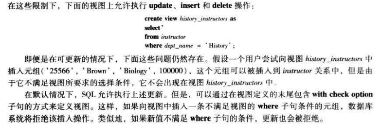
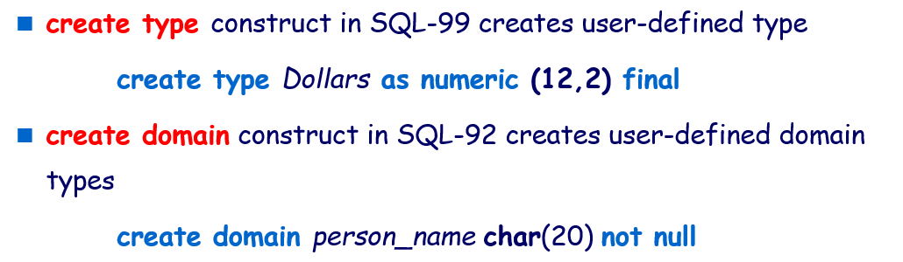

SQL｜中级SQL
中级 SQL
连接表达式
-
通过 join 谓词(predicate) ，可以实现在 join 的结果中得到被 natural join 排除在外的一些记录
-
连接条件(join condition) – 定义两个关系中的哪些元组匹配，以及连接结果中存在哪些属性
-
连接类型(join type) – 定义如何处理每个关系中与另一个关系中的任何元组不匹配的元组（基于连接条件）
连接条件
- on 条件允许参与连接的关系设置通用的谓词（任意的条件）
1 | |
外连接 (Outer Join)
- 参与链接的关系可能会存在某些元祖“丢失”的情况
- 外连接通过在结果中保留
包含空值元组的方式保留在连接中丢失的元组 - 三种形式的外连接
- left outer join, 左外连接：只保留出现在 左外连接 运算之前的关系中的元组
- right outer join, 右外连接：只保留出现在 右外连接 运算之前的关系中的元组
- full outer join, 全外连接：保留出现在两个关系中的元组
内连接 (Inner Join)
- SQL 中把常规链接称为内连接
- 关键词 inner 是可选的，当 join 子句中没有使用 outer 前缀，默认为 inner join
- inner join的结果只保留匹配的元组，不保留未匹配的元组
视图(View)
- 任何这种不是逻辑模型，但作为虚拟关系对用户可见的关系，称为视图，不是实际存在的关系
视图定义
- SQL 提供 View 的定义的语句，必须给视图一个名称，并且需要提供计算视图的查询
1 | |
- 一旦定义了view，view名字就可以作为虚拟关系名来引用
- 视图关系在概念上包含查询结果中的元组，
但不进行预计算和存储
SQL 查询中使用视图
- 一个视图可用于定义另一个视图的表达式中
- 如果在定义 v1 的表达式中使用 v2，则视图关系 v1 称为 直接依赖于 视图关系 v2
- 如果 v1 直接依赖于 v2，或者存在从 v1 到 v2 的依赖关系路径，则视图关系 v1 称为 依赖于 视图关系 v2
- 如果视图关系 v 依赖于自身，则称其为 递归
物化视图
-
如果用于定义视图的实际关系改变，视图也跟着改变，这样的视图称为 物化视图(materialized view)
-
物化视图的优势：
- 频繁使用物化视图的应用，因为存储了视图关系，可以提高响应熟读
- 比如：一些基于聚合函数做统计计算查询的应用，可以定义有关聚合函数计算的物化视图，在物化视图上查询要快很多，避免读取规模大的实际关系表
- 常用于查询业务量较大的应用
- 频繁使用物化视图的应用，因为存储了视图关系，可以提高响应熟读
-
保持物化视图一直在最新状态的过程称为 物化视图维护(materialized view maintenance)
视图更新
- 在实施修改操作时会导致原来实际的关系表中的数据产生不确实性问题
- 大多数 SQL 实现仅允许在简单视图上进行更新
- 当view满足一些条件时，可以对view进行增删改操作：
- from子句只有一个关系
- select子句中只包含关系的属性，不含其它的任何表达式计算或distinct说明
- 任何没有出现在select字句中的属性可以取null值
- 查询中没有group和having子句
在对view进行增删改操作时要谨慎！

完整性约束 (Integrity Constraints)
-
完整性约束保证授权用户对数据库所做的修改不会破坏数据的一致性，因此，完整性约束防止的是对数据的意外破坏
-
完整性约束从何而来？
- 完整性约束基于数据库关系中描述的实际企业的语义
- 我们可以检查数据库实例以查看是否违反了完整性约束，但是我们永远无法通过查看实例来推断完整性约束是否为真
- 码和外码完整性约束是最常见的；此外还支持其他完整性约束
-
完整性约束何时说明：定义数据库schema的时候说明
-
完整性约束何时检验：修改数据库表的时候检验是否违反了完整性约束
-
完整性约束的类型：
- key和foreign key是常用的的约束；
- 基于值的约束与应用数据管理需求相关，例如房价不能为负数，GPA不能超过4等
- 基于元组的约束：属性之间的约束
- 断言：一般指数据库中所有的表需要满足的约束，检测代价很大。
单个关系上的约束
- create table 命令可以包括完整性约束语句
- not null
- primary key
- unique
- check §, where P is a predicate
Not Null 和 Unique 约束
- not null
- 声明禁止在该属性上插入空值
name varchar(20) not null
- unique ( A1, A2, …, Am)
- unique 声明指出，属性 A1、A2、…Am 形成候选码
- 候选码属性可以为 null
check 子句
- 用于关系声明时， check§ 子句指定一个谓词 P，关系中的每个元组都必须满足谓词 P
- check 子句允许以有力的方式对属性域加以限制（如枚举）
参照完整性
- 参照完整性(referential integrity) : 保证在一个关系中给定属性集上的取值也在另一关系的指定属性集的取值中出现
- 当违反参照完整性约束时，通常的处理是拒绝执行导致完整性破坏的操作（更新操作的事务被回滚）
- 外码可以用作为 SQL 中 create table 语句一部分的 foreign key 子句来声明
- 参照完整性约束的级联操作： on delete cascade/ on update cascade
- 如果加入了on delete cascade 和 on update cascade 声明，那么删除或修改 department 表中的记录导致这个参照完整性约束被违反，
删除或修改不会被系统拒绝，而是对course表进行“级联”删除或修改 - 级联动作也可以是set null, set default
- 外码依赖链：在链的一端做的删除或修改操作会影响整个链
- 如果加入了on delete cascade 和 on update cascade 声明，那么删除或修改 department 表中的记录导致这个参照完整性约束被违反，
复杂 check 条件与断言
- check 子句中的谓词可以是包含子查询的任意谓词
- 例如：
check (time_slot_id in (select time_slot_id from time_slot))- 这个 check 条件检测在 section 关系中每个元组的 time_slot_id 的确是在 time_slot 关系中某个时间段的标识
- 因此这个条件不仅在 section 插入或修改元组时需要检测，而且在 time_slot 关系改变时也要检测
- 例如：
- 断言(Assertions)
- 一个断言就是一个谓词，表达我们希望数据库总能满足的一个条件
- 域约束和参照完整性约束是断言的特殊形式
- SQL 的断言采用如下形式
- create assertion
check ( );
SQL 的数据类型与模式
SQL 中的日期和时间类型
-
date : 日历日期，包括年（四位）、月和日
-
time : 一天中的时间，包括小时、分和秒
- 可以用变量 time§ 来表示秒的小数点后的数字位数
- 通过指定 time with timezone 可以把时区信息连同时间一起存储
-
timestamp : 时间戳，date 和 time 的组合
- Example: timestamp ‘2005-7-27 09:00:30.75’
-
interval : 时间段
- 从另一个日期/时间/时间戳值中减去一个日期/时间/时间戳值，得到一个间隔值
- 间隔值可以添加到日期/时间/时间戳值
-
SQL提供将字符串（字符串表达式）转换成类型date或time
cast e as t：将字符串 e 转换成类型 t（date，time，timestamp之一）- Example:
cast <string-valued-expression> as date - Example:
cast <string-valued-expression> as time
- Example:
- SQL提供extract函数从date或time中提取单独的域
extract(field from d)- Example:
extract (year from r.starttime)
用户自定义数据类型
- SQL 支持用户定义数据类型

- 可以从现有数据类型创建新域
- 例如
create domain Dollars numeric(12, 2)create domain Pounds numeric(12,2)
- 例如
大对象类型
-
大型对象（照片、视频、CAD 文件等）存储为大型对象
- blob：二进制大型对象 – 对象是未解释的二进制数据的大型集合（其解释留给数据库系统外部的应用程序）
- clob：字符大对象 – 对象是字符数据的大型集合
- 当查询返回大型对象时，将返回指针，而不是大型对象本身。
-
对于包含大对象的记录，将整个大对象都放入内存，效率低且不现实。应用程序调用SQL查询结果时得到大对象的位置（定位器），然后利用应用程序从定位器找到大对象，采用流的方式获得这个大对象。
授权(Authorization)
-
对数据库各部分的授权形式：
- 读取 - 允许读取，但不允许修改数据。
- 插入 - 允许插入新数据，但不允许修改现有数据。
- 更新 - 允许修改，但不允许删除数据。
- 删除 - 允许删除数据。
-
修改数据库
模式的授权形式- 索引 - 允许创建和删除索引。
- 资源 - 允许创建新关系。
- 更改 - 允许在关系中添加或删除属性。
- 删除 - 允许删除关系。
SQL 中的授权规范
- grant 语句用来授予权限，基本形式为
1
2
3grant <privilege list>
on <relation name or view name>
to <user list>1
grant update (budget) on department to Amit, Satoshi-
用户列表(user list)是
- 用户id
- 公开的，所有有效用户授予权限
- 一个角色
-
授予视图特权并不意味着授予对基础关系的任何特权。
-
privilege list
- select 允许对关系进行读取访问，或使用视图进行查询的能力
- insert 插入元组的能力
- update 使用 SQL 更新语句进行更新的能力
- delete 删除元组的能力
- all privileges 用作所有允许权限的缩写形式
-
权限可以回收
1
revoke <privilege list> on <relation name or view name> from <user list>- 如果
<revokee-list>包含 public，则除显式授予权限的用户外，所有用户都将失去该权限。 - 如果同一权限由不同的被授权者授予同一用户两次，则该用户可以在吊销后保留该权限。
- 依赖于要撤消的权限的所有权限也会被撤消。
角色(Roles)
- 基于角色的访问控制广泛应用于应用中，分配权限时针对角色分配
1
create role instructor;- 角色可以授予用户，也可以授予其他角色
- 因此，一个用户或一个角色的权限包括：
- 所有直接授予用户/角色的权限
- 所有授予给用户/角色所拥有角色的权限
视图的授权
其他授权操作
-
模式的授权
- 只有模式的拥有者才能够执行对模式的任何修改
- SQL 提供了一种 references 权限，允许用户在创建关系时声明外码
- 例如
grant references (dept_name) on department on Mariano- 允许用户 Mariano 创建一个关系，它能参照 department 关系的码 dept_name
-
权限的转移
- 如果希望在授权时允许接收者把得到的权限再传递给其他用户，可以在相应的 grant 命令后面附加 with grant option 子句
-
权限的收回
- revoke 语句可以申明 restrict 来防止级联收回
- 可以用关键字 cascade 来替换 restrict 以表示需要级联收回，但它可以缺省
本博客所有文章除特别声明外，均采用 CC BY-SA 4.0 协议 ，转载请注明出处！
-
- create assertion